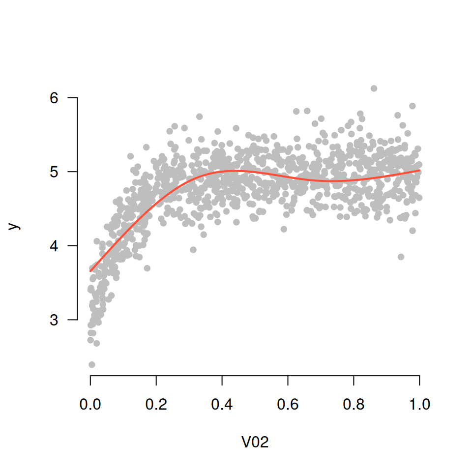
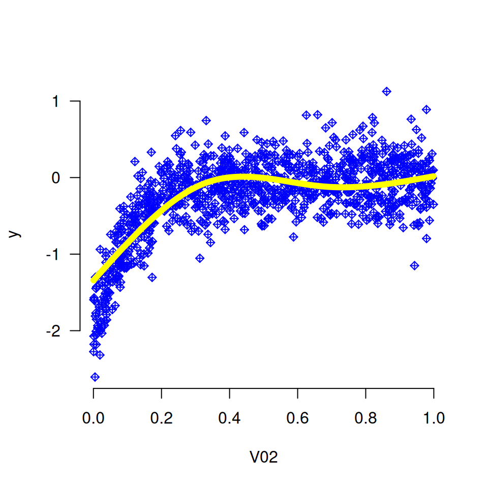
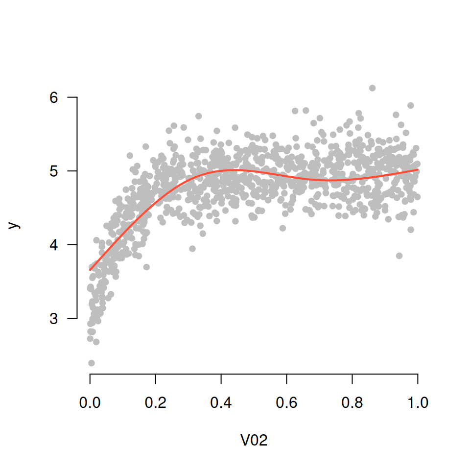
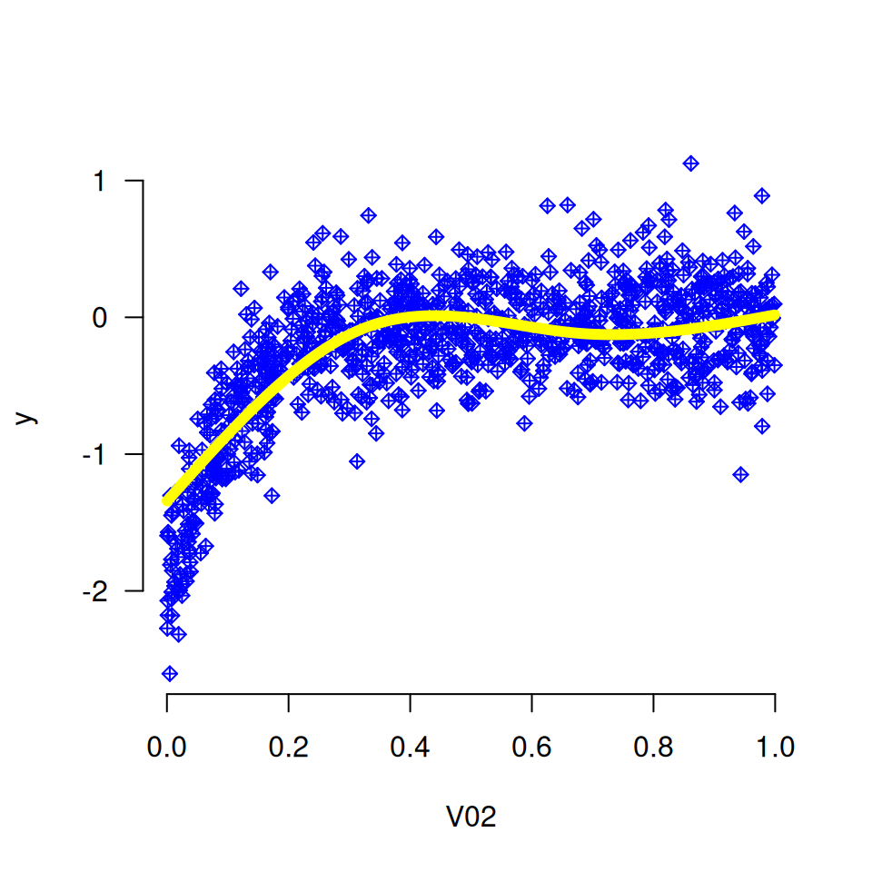

Plots a spline curve for a single variable using a grpreg or cv.grpreg object for which an additive model was fit.
Usage
plot_spline(
fit,
variable,
lambda,
which = NULL,
partial = FALSE,
type = "contrast",
warnings = TRUE,
points.par = NULL,
add = FALSE,
...
)Arguments
- fit
A
grpregobject. The model must have been fit using aexpand_splineobject.- variable
The name of the variable which will be plotted (character).
- lambda
Values of the regularization parameter
lambdawhich will be used for the plot. If a vector is passed, a curve will be drawn for each value of lambda (numeric vector; if acv.grpregobject is passed, thelambdavalue minimizing cross-validation error will be used as a default; otherwise, there is no default value)- which
Index of penalty parameter
lambdawhich will be used for the plot. If bothlambdaandwhichare specified,lambdatakes precedence (integer vector).- partial
If
TRUE, a scatter plot of the partial residuals is superimposed on the curve (logical; default =FALSE). If multiple lambdas are specified, the largest value is used to calculate the residuals.- type
Type of plot to be produced (default =
"contrast"). The following options are supported:If
"conditional", the plot returned shows the value of the variable on the x-axis and the change in linear predictor on the y-axis, holding all other variables constant at their mean value.If
"contrast", the plot returned shows the effect on the linear predictor by moving the x variable away from its mean.
- warnings
If
FALSE, warnings will be suppressed (default =TRUE).- points.par
List of parameters (see
par()to pass topoints()whenpartial=TRUE.- add
Add spline to existing plot? (default: FALSE)
- ...
Further arguments to be passed to
plot(). Note that these arguments also control the appearance of the lines.
Details
plot_spline() takes a model fit using both the grpreg() and expand_spline() functions and plots a spline curve for a given variable.
Examples
Data <- gen_nonlinear_data(n=1000)
X <- expand_spline(Data$X)
fit <- grpreg(X, Data$y)
plot_spline(fit, "V02", lambda = 0.03)
 plot_spline(fit, "V02", which = c(10, 90))
plot_spline(fit, "V02", lambda = 0.03, partial=TRUE)
plot_spline(fit, "V02", lambda = 0.03, partial=TRUE, type='conditional')

plot_spline(fit, "V02", lambda = 0.03, partial=TRUE, lwd=6, col='yellow',
points.par=list(pch=9, col='blue'))

op <- par(mfrow=c(3,2), mar=c(4.5, 4.5, 0.25, 0.25))
for (i in 1:6) plot_spline(fit, sprintf("V%02d", i), lambda = 0.03, partial=TRUE)
par(op)
cvfit <- cv.grpreg(X, Data$y)
plot_spline(cvfit, "V02")
plot_spline(cvfit, "V02", partial=TRUE)
plot_spline(fit, "V02", which = c(10, 90))
plot_spline(fit, "V02", lambda = 0.03, partial=TRUE)
plot_spline(fit, "V02", lambda = 0.03, partial=TRUE, type='conditional')

plot_spline(fit, "V02", lambda = 0.03, partial=TRUE, lwd=6, col='yellow',
points.par=list(pch=9, col='blue'))

op <- par(mfrow=c(3,2), mar=c(4.5, 4.5, 0.25, 0.25))
for (i in 1:6) plot_spline(fit, sprintf("V%02d", i), lambda = 0.03, partial=TRUE)
par(op)
cvfit <- cv.grpreg(X, Data$y)
plot_spline(cvfit, "V02")
plot_spline(cvfit, "V02", partial=TRUE)